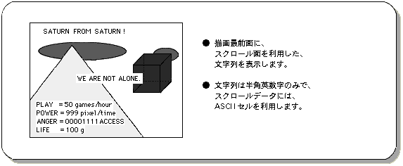
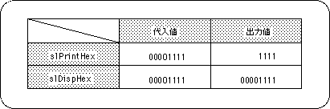
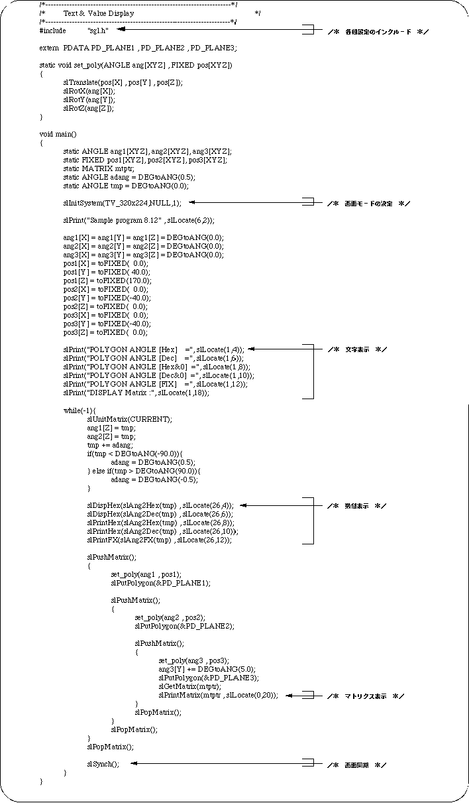
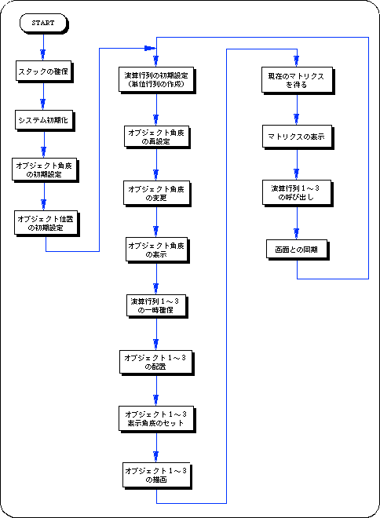
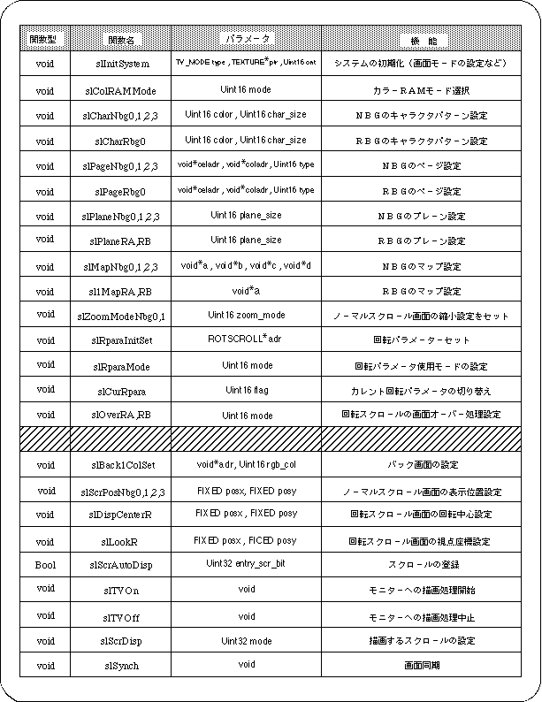
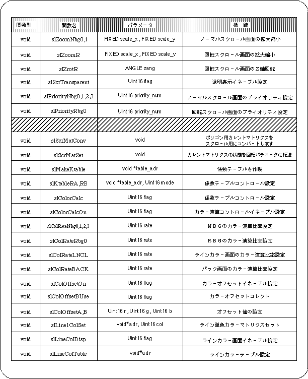
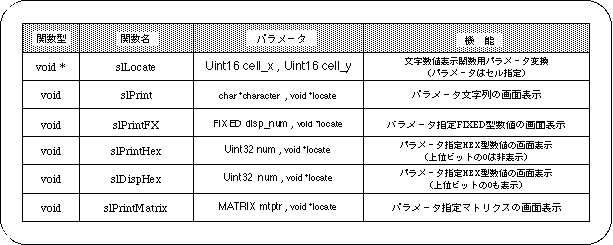
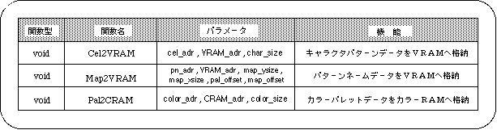

Return to previous page | Return to menu | Go to next page
8-12. Numeric value display
The SGL library functions described here are mainly used for program debugging. The function displays the specified string, number, or matrix on the monitor using the scroll surface. ASCII cell data is used for scroll data and a rotary scroll screen is used for the scroll surface, which are set to be usable by default (system initialization stage).
Figure 8-30 Character numeric display image

Character value display functions can be broadly classified into the following four types.
Display position calculation: Creates display position parameters for use in functions.
Character string display: The specified character string is displayed on the screen.
Display of numerical value: The specified numerical value is displayed on the screen.
Display matrix: Displays the specified matrix on the screen.
Below, I will explain each of these four functions.
1) Display position calculation
Set the display position of characters and numbers in cell units, and convert them to a form that can use the following functions.
- [void * slLocate (Uint16 cell_x, Uint16 cell_y);]
- Creates a display position parameter variable (void * type) that can be used with the character numeric display function. For the parameter, substitute the XY coordinate value indicating the display position on the monitor screen in units of cells (8 dots are counted as 1 cell).
2) Character string display
A character string composed of single-byte alphanumeric characters is displayed on the screen.
- [void slPrint (char * disp_character, void * disp_pos);]
- Displays the specified character string on the screen.
For the parameter, substitute the character string to be displayed (char type variable enclosed in "") and the display position (converted to void * type by "slLocate"). However, the character string is limited to single-byte alphanumeric characters.
3) Numeric display
The numerical value is displayed on the screen.
- [void slPrintFX (FIXED disp_num, void * disp_pos);]
- The specified FIXED value is displayed on the screen.
For the parameter, substitute the numerical value to be displayed (FIXED type variable) and the display position (converted to void * type with “slLocate”).
- [void slPrintHex (Uint32 disp_num, void * disp_pos);]
- Displays the specified HEX type numerical value on the screen. For the parameter, substitute the numerical value to be displayed (HEX type variable) and the display position (converted to void * type with “slLocate”).
The function “slPrintHex” does not display the high-order bit 0 when displaying numerical values (a space is inserted instead).
- [void slDispHex (Uint32 disp_num, void * disp_pos);]
- Displays the specified HEX type numerical value on the screen. For the parameter, substitute the numerical value to be displayed (HEX type variable) and the display position (converted to void * type with “slLocate”).
The function “slDispHex”, unlike “slPrintHex”, also displays the high-order bit 0 when displaying numerical values.
The functions “slPrintHex” and “slDispHex” are both for displaying the HEX type numerical value on the screen, but differ in whether or not the upper bit 0 is displayed.
However, numbers are always displayed right-justified.
Table 8-26 Differences between “slPrintHex” and “slDispHex”

Note) The output value is the numerical value that is actually drawn on the screen.
4) Display matrix
Display the matrix on the screen.
- [void slPrintMatrix (MATRIX disp_matrix, void * dsp_pos);]
- Displays the specified matrix on the screen. For the parameter, substitute the matrix variable to be displayed and the display position (converted to the void * type with slLocate).
The following sample program (Listing 8-10) is an actual display of character strings and numerical values using a scroll screen by actually using the character numerical value display function group.
List 8-10 sample_8_12: Character numeric display

Flow 8-14 sample_8_12: Character numerical display

In this chapter, the functions in the following table were explained.
Table 8-27 SGL library function 1 that appeared in this chapter 1

Table 8-28 SGL Library Function 2 Appearing in This Chapter

Table 8-29 SGL library function 3 that appeared in this chapter 3

Table 8-30 User-defined functions that appeared in this chapter

Return to previous page | Return to menu | Go to next page